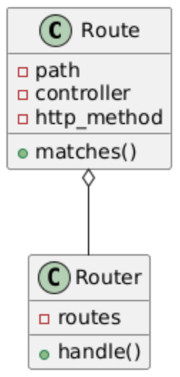
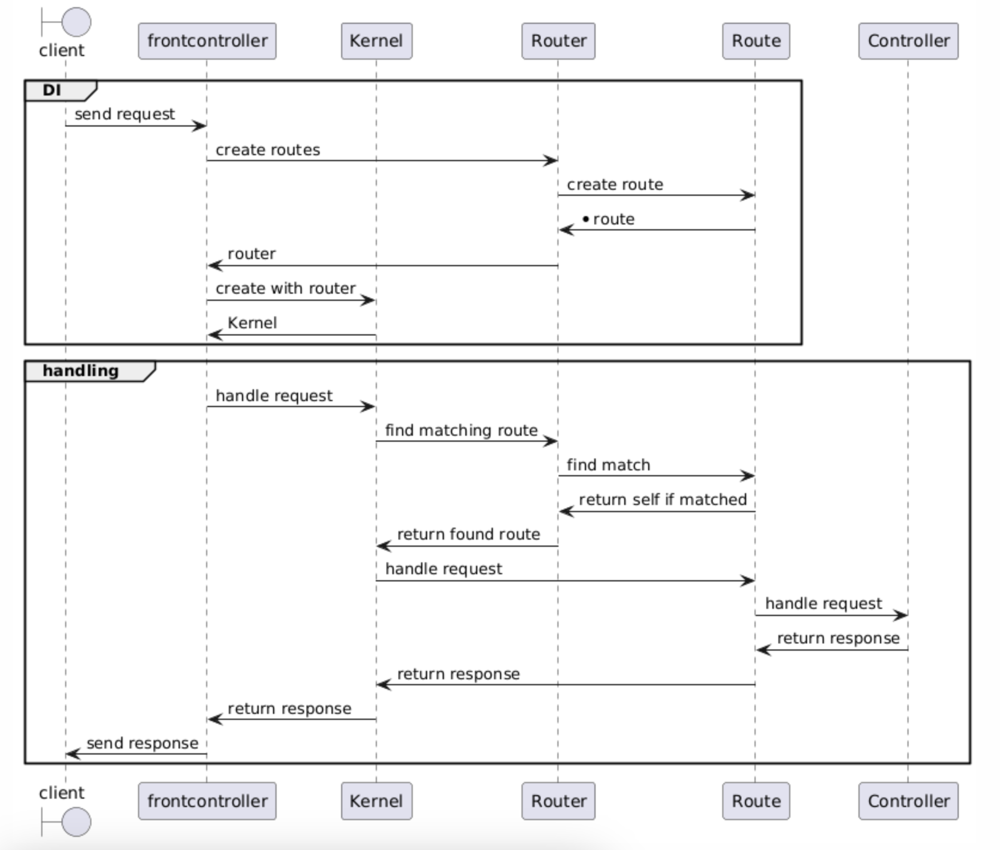

Iteratie 6: een betere matching¶
Als laatste stap in deze week moeten we er nog voor zorgen dat de routes beter worden gematcht. Vooralsnog gebruikten we een hard string als key in de klasse Route, maar da's natuurlijk niet handig. Er kan natuurlijk veel meer in zo'n route zitten terwijl het door dezelde controller moet worden afgehandeld. Bekijk de volgende voorbeelden:
| methode | route | match | variable-part | controller |
|---|---|---|---|---|
GET |
/welkom/piet |
/welkom |
'piet' | WelkomController |
GET |
/welkom/Chantal |
/welkom |
'Chantal' | WelkomController |
POST |
/welkom/henk |
/welkom |
'henk' | WelkomController |
Let op: bij het matchen is het natuurlijk mogelijk dat er meerdere parameters in het pad voorkomen. Zo kun je bijvoorbeeld een request doen naar https://cataas.com/cat/:tag/says/:text, waarbij je twee pad-parameters opgeeft: de tag (waarmee het soort kat wordt geselecteerd) en de text (waarmee je een stuk tekst opgeeft wat onder het plaatje van de kat komt te staan). Het request https://cataas.com/cat/cute/says/meerdere%20tags%20jonguh levert zo het volgende plaatje op:
Om al deze mogelijke paden op te kunnen vangen, is het nodig dat we een nieuwe klasse Route maken, die op basis van een aantal gegevens bepaalt of de opgevraagde URI past bij deze route. Bedenk zelf een syntax waarmee je pad-parameters opgeeft (zoals bij die cataas gebruik gemaakt wordt van een dubbele punt). Bestudeer het onderstaande klassediagram:

Stap 1: de klasse Route¶
Maak een klasse Route in dezelfde namespace als waar je je Router hebt gezet. Deze klasse zorgt feitelijk voor een koppeling tussen een pad en een bijhorende controller. Zorg ervoor dat bij het aanmaken van instanties van deze klasse deze beide gegevens moeten worden meegegeven. Je kunt natuurlijk ook verschillende routes hebben voor verschillende typen requests, afhankelijk van de http-methode. Zorg er ook voor dat dit in de klasse wordt opgenomen, waarbij je standaard uitgaat van GET.
Voorzie deze klasse van een methode die een ServerRequestInterface-object ontvangt en op basis van de daarin geëncapsuleerde uri en methode teruggeeft of deze Route bij de request past of niet (het return-type van deze methode is dus bool). Je zult doet iets slims met reguliere expressies moeten doen om de verschillende mogelijkheden van een route te ondervangen (zie de tabel hierboven).
Omdat de instanties van Route weten welke controller bij welk pad moet worden aangeroepen, is die de klasse waar we deze koppeling expliciet kunnen leggen. Maak hiervoor in Route een methode die opnieuw een ServerRequestInterface ontvangt en de methode handle aanroept op de controller die bij deze specifieke Route-instantie is opgeslagen. Deze methode retourneert dus feitelijk de Response die door de aangeroepen controller wordt teruggegeven.
Info
Zorg ervoor dat het pad dat je in de route opslaat path-parameters kan bevatten, en dat de meegegeven waarde naar de betreffende controller wordt gestuurd. Stel je voor dat de Route een methode match(string $path, string $method):bool heeft, dan zou het volgende moeten werken:
$route = new Route('/welkom/<naam>', WelkomController::class, 'get');
$route->match('/welkom/henk', 'get'); # zou true terug moeten geven.
Bij het aanmaken van de controller in de handle-methode, zul je deze waarde henk dus aan de instantie moeten meegeven. Mogelijk moet je hiervoor twee keer hetzelfde doen, één keer om te machten en één keer om de waarde op te halen.
Stap 2: aanpassingen in de klasse Router¶
In de vorige iteratie maakten we voor de routes gebruik van een associatieve array die paden koppelde aan controllers. Nu we een nieuwe separate klasse daarvoor hebben, moeten we daar natuurlijk van gebruik maken. Zorg ervoor dat de array in je frontcontroller alleen nog maar instanties van de klasse Route bevat.
Nu we een separate klasse voor de routes zelf hebben, moeten we daar natuurlijk gebruik van maken in onze Router. Pas de methode route aan, zodat deze over de lijst van opgeslagen routes heen loopt en telkens checkt of het request past op de gegeven route (maak dus gebruik van de methode die je in de eerste stap van deze iteratie hebt gemaakt). Als de match gevonden is, retourneer dan die route.
Pas de methode handle in de Kernel aan, zodat deze van de Router de juiste Route terugkrijgt. Roep vervolgens op deze Route de methode aan die je in Route hebt gemaakt om de bijhorende controller aan te maken en uit te voeren. Retourneer de response aan de frontcontroller. Zie onderstaand sequentiediagram om een beeld te krijgen van hoe deze klassen allemaal met elkaar samenwerken.
